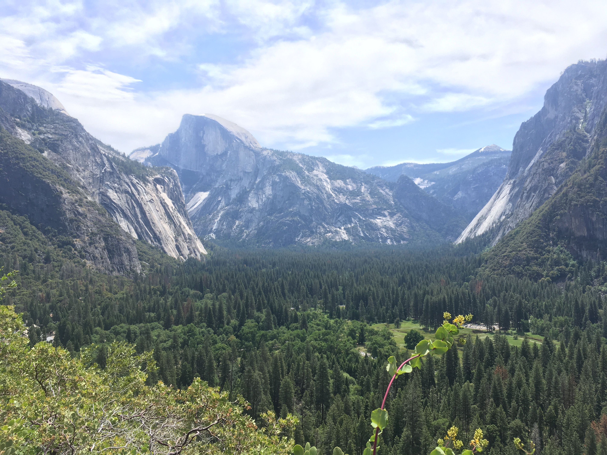
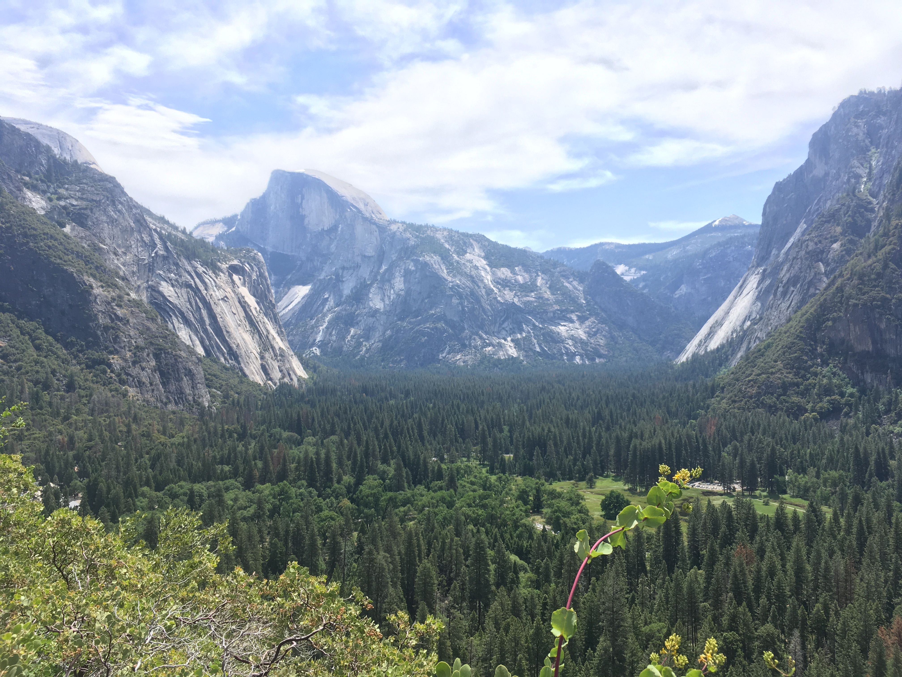

There are a few theories for training for climbing, but the most important thing to remember is that the best program is the one that you stick to. With that in mind, this page is meant to show what a 3 month training cycle looks like for me. I like to focus primarily on one type of training at a time. This page is going to provide the outline - click on the links in the navigation bar at the top of the page to see details on each type of training.
For those who don't know, this system is a periodized system rather than non-linear periodized system. The focus is on one thing at a time, whereas in a NLPS the goal is to do a little of everything each week. The NLPS system is extremely popular and worth looking into, but it is not where my expertise is.

- Order and approximate timeline:
- Volume: 2-4 weeks
- Strength: 4-6 weeks
- Power: 2-3 weeks
- Power Endurance: 2-3 weeks
For those who don't know, this system is a periodized system rather than non-linear periodized system. The focus is on one thing at a time, whereas in a NLPS the goal is to do a little of everything each week. The NLPS system is extremely popular and worth looking into, but it is not where my expertise is.
